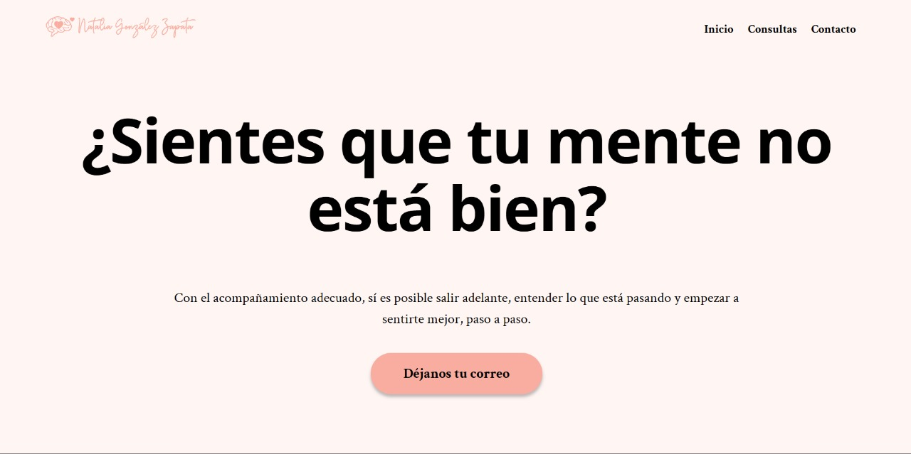
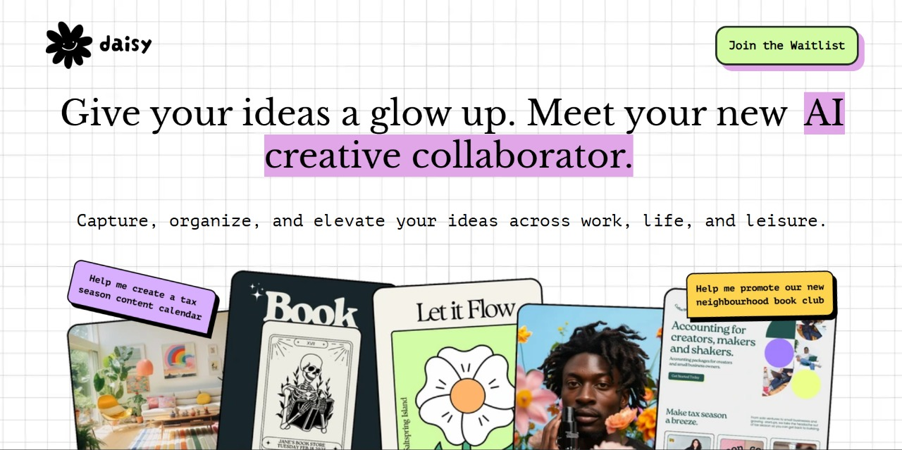
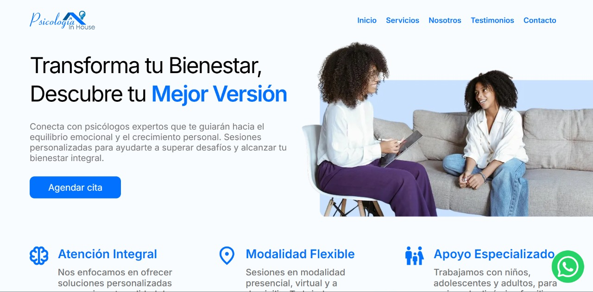
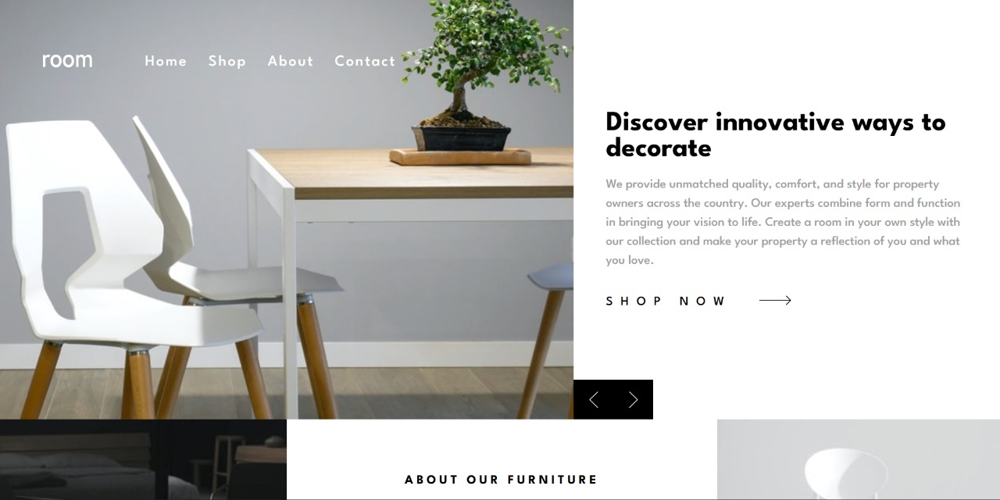
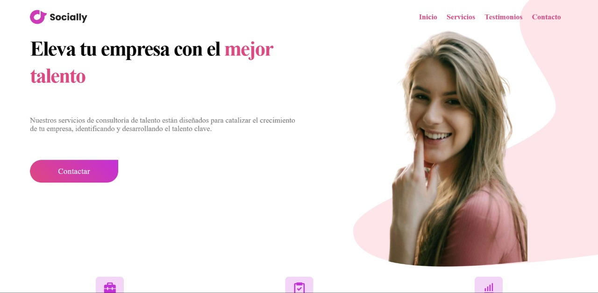
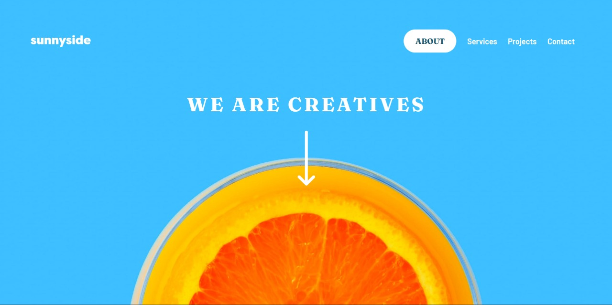
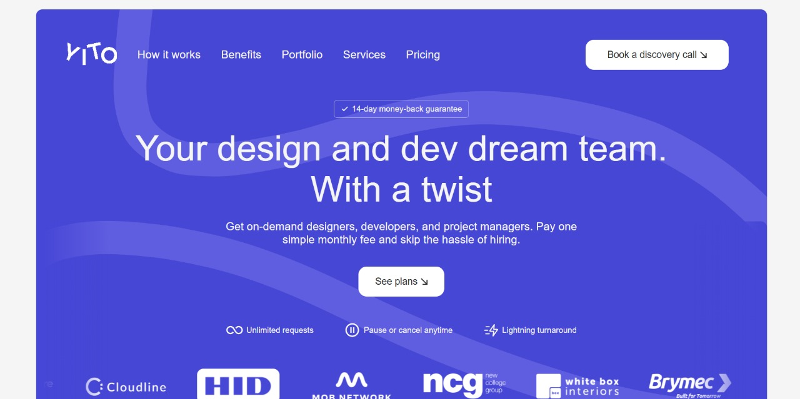

En InfiCode, creamos soluciones digitales que superan tus expectativas, ayudándote a destacar en un entorno competitivo.


Analizamos, diseñamos y desarrollamos soluciones digitales que impulsan el crecimiento de tu negocio, garantizando calidad y satisfacción en cada etapa.
Clientes Satisfechos (%)
Proyectos Completados
Tasa de Éxito (%)
Webs Personalizadas (%)
Ofrecemos soluciones digitales completas para llevar tu negocio al siguiente nivel.
Diseñamos páginas de aterrizaje atractivas, rápidas y efectivas. Ideales para campañas o lanzamientos.
Creamos sitios web personalizados y adaptados a cualquier dispositivo.
Desarrollamos tiendas en línea seguras, dinámicas y optimizadas para impulsar tus ventas.
Explora algunos de nuestros trabajos más destacados.

Crecimiento Mental es una plataforma de formación que ofrece herramientas prácticas a madres, padres y profesionales para entender el desarrollo infantil, gestionar conductas difíciles y fomentar relaciones más sanas con los hijos. Su enfoque combina contenidos accesibles y acompañamiento para potenciar el crecimiento emocional y cognitivo en el ámbito familiar.

Daisy AI es una aplicación web basada en inteligencia artificial que permite a los usuarios interactuar con un asistente conversacional inteligente enfocado en el ámbito psicológico. Con diálogos personalizados y empáticos, Daisy AI ayuda a explorar emociones, pensamientos y conductas desde un entorno seguro y accesible, facilitando la auto‑reflexión y el bienestar mental.

Psicología In House ofrece atención psicológica integral y personalizada para niños, adolescentes, adultos y familias. Brinda modalidades flexibles —presencial, virtual y a domicilio—, con sesiones adaptadas a las necesidades de cada etapa de la vida, desde el desarrollo infantil hasta la gestión emocional en adultos. Su enfoque profesional permite acompañar procesos de transformación personal y mejorar la calidad de vida.

Grid Landing Page es una landing page moderna construida con un enfoque en maquetación mediante CSS Grid y Flexbox. El diseño organiza imágenes, tipografía y llamada a la acción de forma limpia y responsiva, presentando una propuesta visual clara: “Descubre formas innovadoras de decorar”. Gracias a su estructura fluida, adapta el contenido a distintos dispositivos logrando equilibrio entre estilo y funcionalidad.

RL Consultalent es un sitio web moderno para una consultora de talento humano que equilibra un diseño claro y profesional con funcionalidades orientadas a la presentación de servicios y captación de clientes. Incluye secciones de equipo, servicios, testimonios y contacto, todo adaptado para brindar una experiencia fluida tanto en escritorio como en dispositivos móviles.

Sunnyside Landing Page es una página de presentación moderna creada con un enfoque visual potente: presenta imágenes impactantes, tipografía elegante y una navegación fluida. Su diseño responde perfectamente a distintos tamaños de pantalla, ofrece una experiencia interactiva en escritorio y móvil, y se destaca por su estética minimalista y profesional que capta y mantiene la atención del usuario.

Yito es una experiencia web ágil y minimalista diseñada para prioritizar la navegabilidad y el impacto visual. Con una interfaz limpia, transiciones suaves y adaptabilidad móvil, este proyecto destaca por su capacidad de presentar contenido de forma clara, directa y atractiva, permitiendo que el usuario se enfoque inmediatamente en la propuesta sin distracciones.